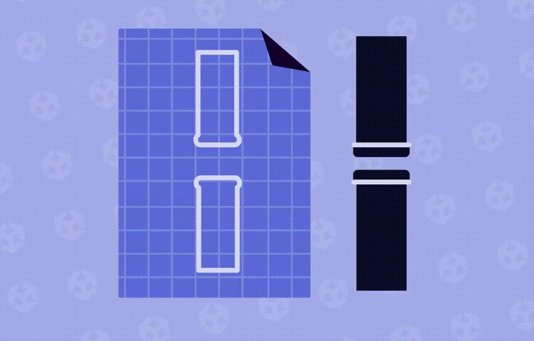
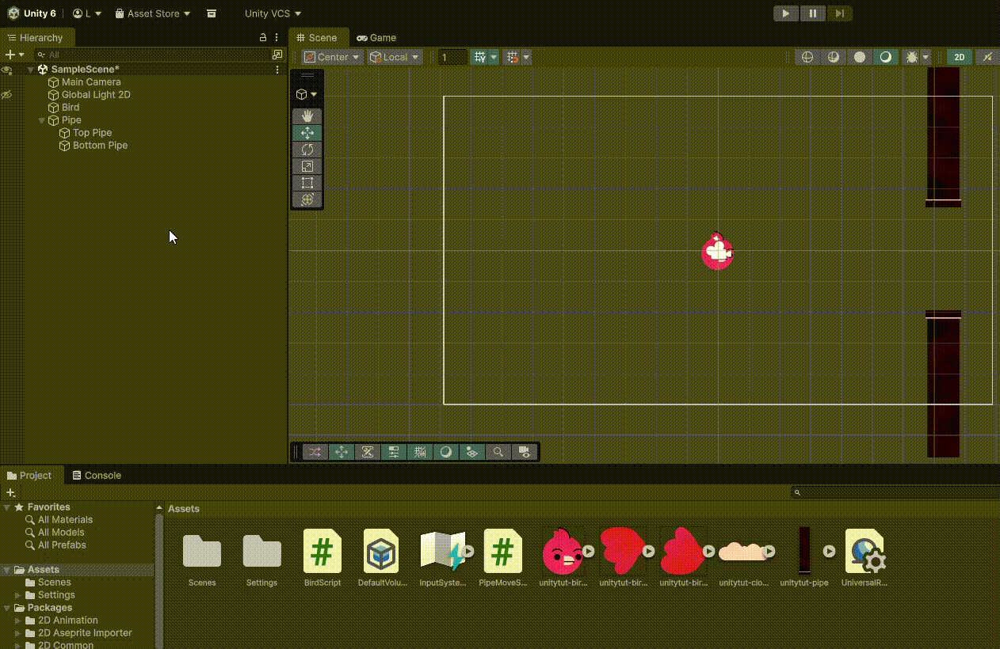

🧪 Las tuberias
Ya tenemos a nuestro 🐦 Prota listo para volar, con su gravedad y su collider establecido dentro del propio GameObject. Lo que tenemos que hacer ahora es crear el GameObject para las tuberías y hacer que vayan apareciendo y avanzado por la pantalla.
La tuberia como GameObject
De la misma manera que hemos hecho con Bird Läwson tendremos que crear un GameObject nuevo dentro de nuestro juego para poder asociarle el sprite de la tuberia y sus propiedades.
Seguimos los pasos de antes:
- Botón derecho en el panel de Jerarquía > Create empty
- Le ponemos un nombre, por ejemplo 👉 Pipe
- Crea otro GameObject que se llame Top Pipe que esté dentro de Pipe
- Vamos a situarlo justo en la misma posición que el pájaro
- Asigna el sprite de la tubería a tu nuevo objeto de juego que acabas de crear
- Establece el tamaño idóneo, para que conservar ciertas proporciones
- Añade un componente de colisión Box Collider 2D y estable el tamaño que consideres
- Ahora duplica este objeto que hemos creado, el de Top Pipe
- Cámbiale el nombre al objeto duplicado, por ejemplo 👉 Bottom Pipe
- En las propiedades del objeto, en el apartado scale pon el valor en negativo
- Establece la posición que quieras para dicha tubería, ten en cuenta el tamaño del protagonista
📃 Añadiendo el script a nuestra tubería
Ahora que ya hemos acabado con el apartado gráfico de la tubería, necesitamos agregar un script para que se comporte como nosotros queramos. Por lo tanto, añadimos un nuevo script que lo llamaremos 👉 PipeMoveScript. ‼️PERO MUY IMPORTANTE‼️debemos agregar el script al objeto padre no a la tubería top ni a la bottom:
Main Camera
Global Light 2D
Bird
Pipe 👈 /*\ Añadimos el Script a este GameObject
├── Top Pipe
└── Bottom Pipe
Nuestro script tiene que hacer que el GameObject de las tuberias (Pipe) se mueva de derecha a izquierda, para que crea un efecto como si el pájaro estuviera volando de izquierda a derecha.
Para ello deberemos tocar las propiedad Transform dentro de nuestro GameObject. Probemos a establecer una velocidad predeterminada, creando una variable que se llame moveSpeed y la inicializamos a 5, por ejemplo.
using UnityEngine;
public class PipeMoveScript : MonoBehaviour
{
public float moveSpeed = 5;
// Start is called once before the first execution of Update after the MonoBehaviour is created
void Start()
{
}
// Update is called once per frame
void Update()
{
transform.position = transform.position + (Vector3.left * moveSpeed);
}
}
Iniciando el juego
Mira a ver si consigues ver el movimiento de las tuberias 🏃♀️... parece que no, vamos a configurar el DeltaTime mejor. Si revisas los "Stats" dentro del menú de renderizado, en el panel Juego, verás que el juego está cargando a una cantidad absurdamente elevada de FPS.
⌛ Delta Time
En Unity, deltaTime es el tiempo que ha pasado entre un frame y el siguiente.
Se usa para que el juego funcione a la misma velocidad independientemente de los FPS.
🧠 La idea básica
Los juegos se actualizan frame por frame.
Por ejemplo:
| FPS | Tiempo entre frames |
|---|---|
| 60 FPS | ~0.016 segundos |
| 30 FPS | ~0.033 segundos |
| 120 FPS | ~0.008 segundos |
Ese tiempo entre frames es Time.deltaTime.
⚠️ Problema sin deltaTime
Imagina que mueves un objeto así:
Esto ocurre cada frame.
Entonces:
- A 30 FPS → se mueve 30 veces por segundo
- A 120 FPS → se mueve 120 veces por segundo
💥 Resultado: el objeto va 4 veces más rápido en PCs potentes.
✅ Solución con deltaTime
Ahora el movimiento depende del tiempo real, no del número de frames.
📊 Ejemplo
Si quieres moverte a 5 unidades por segundo:
Si el frame dura:
- 0.016 s (60 FPS) → mueve
0.08 - 0.033 s (30 FPS) → mueve
0.165
Pero al final del segundo → se moverá 5 unidades igualmente.
🎮 Ejemplo típico en Unity
Esto significa:
"Muévete a 5 unidades por segundo hacia la derecha".
🧩 Regla de oro en Unity
Usa Time.deltaTime cuando hagas cosas que dependen del tiempo:
✅ Movimiento ✅ Rotación ✅ Animaciones manuales ✅ Temporizadores
🔰 Corrigiendo el script de las tuberías
Veamos cómo podemos adaptar el Delta Time a nuestro códido, dentro del script PipeMoveScript.cs. Simplemente deberemos multiplicar nuestro vetor de movimiento y la velocidad por el delta time
using UnityEngine;
public class PipeMoveScript : MonoBehaviour
{
public float moveSpeed = 5;
// Start is called once before the first execution of Update after the MonoBehaviour is created
void Start()
{
}
// Update is called once per frame
void Update()
{
transform.position = transform.position + (Vector3.left * moveSpeed) * Time.deltaTime;
}
}
Documentación oficial 👉 Delta Time
Si quieres saber más sobre Delta Time, puedes echar un vistazo a la documentación oficial
➡️a través de este enlace⬅️
🧪🧪🧪 Más tuberías, queremos infinitas!

La idea del juego es que sea una única escena (pantalla) donde se genere infinítamente nuestro objeto de tubería (tanto la de arriba como la de abajo) y que vayan apareciendo de derecha a izquierda en nuestra escena. Algo así como hacer un do~while pero sin condición que pare de crear el objeto tubería. Para ello crearemos el primer PreFab que, si no nos acordamos de qué era 👇
🗺️ Prefab
Es una plantilla de un GameObject que se puede reutilizar en diferentes partes del proyecto. Al modificar el prefab original, todos los objetos instanciados a partir de él se actualizan automáticamente, lo que ahorra tiempo y mantiene la coherencia. Es como un GameObject que has frabicado tú, con sus propiedades y que puedes instanciar en la escena.
para crear nuestro Prefab de nuestro objeto Pipe, es tan fácil como seleccionar el objeto Pipe en el panel izquierdo y arrastrarlo al panel de Assets. Una vez hecho esto, ya no necsitamos nuestro objeto Pipe en la jerarquía de los GameObject así que lo podemos borrar ⬇️

Usando nuestro 🗺️ Prefab en el proyecto
Ahora que ya tenemos nuestros Planos de las tuberias para poder crear todas las que queramos, vamos a preparar un nuevo molde, o lo que es lo mismo, un GameObject que esté enlazado a este plano. Lo llamaremos Pipe Spawner y crearemos un script dentro que se llame PipeSwpanerScript.
El siguiente paso será enlazar nuestro Prefab al objeto del juego que acabamos de crear Pipe Spawner, así que vamos a crear un nuevo input y arrastrar nuestro prefab a dicho input.